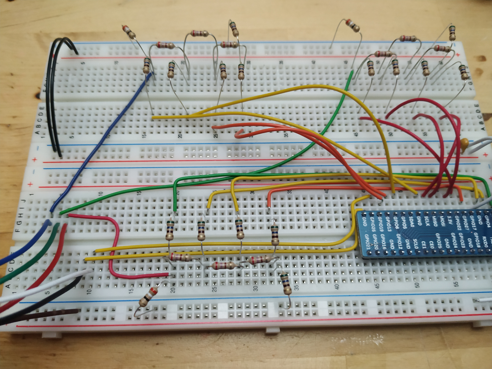

This text is about an experiment that maybe does not make very much sense, but I did have lots of fun with all of it. VGA output on the Zynqberry!
The Zynqberry is a Xilinx Zynq-7010 based single board computer in Raspberry Pi form-factor by trenz-electronic. As the Zynqberry Mimics the Raspberry Pi, it already has an HDMI connector which is what makes it perhaps a bit odd to want to add VGA to it as well. But it is all for learning and fun, so who cares about it making sense. Also HDMI seems a bit scary to me at the moment. Maybe should take a look at HDMI output at some point in the future.
What I describe in this post will build heavily upon a number of earlier posts. These are, Nexys A7 VGA - part 1, Nexys A7 VGA - part 2 and also the Get started with VHDL on the Zynqberry post.
The VHDL Implementation of the graphics memory and the VGA output is identical here to what is described in the part 2 post on VGA on the Nexys A7.
VGA is analog and the Zynqberry GPIOs digital, so some kind of DAC is needed. The Nexys A7 have a 4 bit DAC per color on the board for VGA display but the Zynqberry does not have that. To get VGA output we will need to build a DAC of our own.
One kind of DAC that can be built at home easily with just a bunch of resistors is an R2R DAC. This is a network of resistors of only two values R and 2*R. For more details check out for example this tutorial: Electronics Tutorials R2R DAC.
Check out this Illustration. It uses 5V (I could not find a way to set it to 3V3) and as such it hits somewhere over 1V maximum while VGA wants 0.7V. The 75 Ohm resistor seen there represents the load of the VGA display and cable (as I understand it). The picture below shows the same DAC drawn up in KiCad for simulation. I used the KiCad simulator to find the value of R that makes the output signal at most roughly 0.7V.
A complete VGA DAC can now be constructed by replicating the circuit seen above once for each color channel (3 in total).
I also made an attempt at a VGA DAC on an experiment board (The soldering kind). The result of this is shown below.
| Experiment board VGA DAC | Hat-like connection |
|---|---|
|
|
This attempt actually worked quite well but the circuit it implements does not look exactly like the one used in the simulation above. It is missing that bigger termination resistor and at some point I kind of flipped it upside down. Oddly enough it produces an image that looks just fine! Another difference is that I don't have resistors in my boxes with resistances that make up good R and 2*R pairs, so it was very roughly an R2R DAC.
The next attempt was more faithful to what was simulated in KiCad. I still don't have access to exactly R and 2*R resistors, but they are somewhere close. This experiment was executed on breadboard and looks like the picture below.
| Bread board VGA DAC | Connection to Zynqberry |
|---|---|
|  |
Ok, all of this experimentation seems to point out that for a 4 bit (per color) VGA DAC, you don't need to be very strict. If you are "close enough" there will some graphics on the screen. Maybe the colors are slightly too dim (or too bright) or the steps in intensity not entirely linear. The picture below shows what the VGA output looks like through the breadboard DAC.
The VHDL code used for this first VGA experiment on the Zynqberry is identical to that used in Nexys A7 VGA - part 2. So wont go into any of the details of that here again. There are some differences in how to get it all to work on the Zynq though. The main difference being the Zynq processing system and how to clock the thing. In the Nexys case getting a clock to the design was done through the constraints file but here I did it using the block design GUI.
I am not sure that what I describe here is the one and true way to do it. If you have feedback, please just send an email. There may be better ways.
To set up this on the Zynq one needs to go through roughly these steps:
I'm thinking the result of doing all this should look roughly like the picture below.
One thing to perhaps double check is that the HDL wrappers generated by Vivado are now the top level design source. If it is not you should make it so.
Now, create a constraints file and add the following constraints to that file.
#RED
set_property -dict {PACKAGE_PIN K15 IOSTANDARD LVCMOS33} [get_ports {RED[3]}]
set_property -dict {PACKAGE_PIN J14 IOSTANDARD LVCMOS33} [get_ports {RED[2]}]
set_property -dict {PACKAGE_PIN H12 IOSTANDARD LVCMOS33} [get_ports {RED[1]}]
set_property -dict {PACKAGE_PIN G11 IOSTANDARD LVCMOS33} [get_ports {RED[0]}]
#GREEN
set_property -dict {PACKAGE_PIN G12 IOSTANDARD LVCMOS33} [get_ports {GREEN[3]}]
set_property -dict {PACKAGE_PIN H13 IOSTANDARD LVCMOS33} [get_ports {GREEN[2]}]
set_property -dict {PACKAGE_PIN H14 IOSTANDARD LVCMOS33} [get_ports {GREEN[1]}]
set_property -dict {PACKAGE_PIN J13 IOSTANDARD LVCMOS33} [get_ports {GREEN[0]}]
#BLUE
set_property -dict {PACKAGE_PIN J15 IOSTANDARD LVCMOS33} [get_ports {BLUE[3]}]
set_property -dict {PACKAGE_PIN N14 IOSTANDARD LVCMOS33} [get_ports {BLUE[2]}]
set_property -dict {PACKAGE_PIN R15 IOSTANDARD LVCMOS33} [get_ports {BLUE[1]}]
set_property -dict {PACKAGE_PIN R13 IOSTANDARD LVCMOS33} [get_ports {BLUE[0]}]
# VSYNC
set_property -dict {PACKAGE_PIN R12 IOSTANDARD LVCMOS33} [get_ports {VSYNC}]
#HSYNC
set_property -dict {PACKAGE_PIN L12 IOSTANDARD LVCMOS33} [get_ports {HSYNC}]
At this stage it should be time to synthesize, implement and generate bitstream. And if all of that completes successfully the next step is to export hardware (include the bitstream) and then launch Vitis.
In Vitis create a hello world project using the exported hardware and run it through the debugger.
Most of what is described in this text builds upon the previous posts on Zynqberry, Nexys A7 VGA - part 1 and part 2. But still, lots of fun.
The Zynq platform opens up for some fun next steps. One thing that would be nice is to pull that image memory hardware out of the VGA box and then replace it with a memory with an AXI interface so that it could be written to from the ARM cores. Maybe this memory would need to be dual ported so that the VGA module and the ARM core can read/write to it at the same time? I don't know. I noticed that there is a "Block Memory Generator" (BMG) IP in Vivado that can be used to generate memories. Would be nice to figure out how to use that. The memories generated by the BMG all seems to be 32 bit word read and write though while the VGA as it is now reads a byte and then performs 3x color nibble lookups. Some major changes would be needed but it sounds like fun and I want to attempt it if there is ever some time.
Building some DACs was also fun. So to make it easier to experiment more with VGA on ZynqBerry I decided to make a PCB. The breadboard setup wont last very long, not with all the cats that like to walk around on my desk.
Below are some pics of the Zynqberry VGA PCB and the schematics.
| PCB VGA DAC front | PCB VGA DAC back |
|---|---|
Thanks a lot for reading. I hope you are having a good day. Please get in touch if you have questions, hints, tips or any other kind of constructive feedback.
Please contact me with questions, suggestions or feedback at blog (dot) joel (dot) svensson (at) gmail (dot) com or join the google group .
© Copyright 2020 Bo Joel Svensson
This page was generated using Pandoc.